Contents
clc;clear; close all
inputIm=phantom(128);
imshow(inputIm)
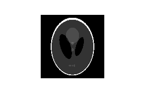 Computing Radon transform of an Image
tic deltaS=0.5; R = myRadonTransform(inputIm,deltaS);% computes Radon Transform of the % input Phantom Image figure imagesc(R); title('Radon Transform with deltaS=0.5') toc tic deltaS=1; R = myRadonTransform(inputIm,deltaS);% computes Radon Transform of the % input Phantom Image figure imagesc(R); title('Radon Transform with deltaS=1') toc tic deltaS=3; R = myRadonTransform(inputIm,deltaS);% computes Radon Transform of the % input Phantom Image figure imagesc(R); title('Radon Transform with deltaS=3') toc
Elapsed time is 15.308281 seconds. Elapsed time is 8.959684 seconds. Elapsed time is 5.362201 seconds.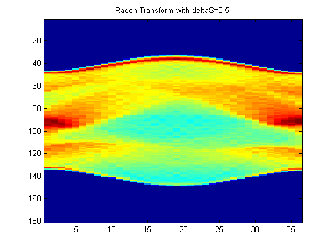
 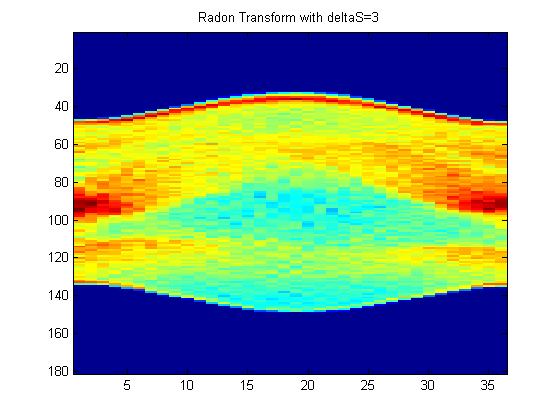
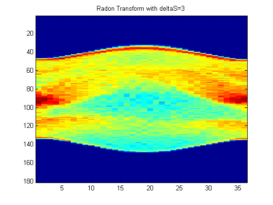 Observation:
Here, we can clearly notice the that the time taken to compute the transform decreases and blurring increases with increasing deltaS as we are compromising on precision. deltaS=3 gives a blurred image while remaining two are fairly smooth, especially in the blue part. Hence an optimal choice would be deltaS=1 which is smooth and fast enough.
1-D plots of Radon Transform vs t for various theta
deltaS=0.5; figure theta=0; t=-90:5:90; m=length(t); R=zeros(1,m); for i=1:m R(i)=myIntegration(t(i),theta,inputIm,deltaS); end plot(t,R); title('Plot of Rf(t) vs t for theta=0 and deltaS=0.5') xlabel('t (-90 to 90 in steps of 5)') ylabel('Radon Transform Value') figure theta=90; t=-90:5:90; m=length(t); R=zeros(1,m); for i=1:m R(i)=myIntegration(t(i),theta,inputIm,deltaS); end plot(t,R); title('Plot of Rf(t) vs t for theta=90 and deltaS=0.5') xlabel('t(-90 to 90 in steps of 5)') ylabel('Radon Transform Value') deltaS=1; figure theta=0; t=-90:5:90; m=length(t); R=zeros(1,m); for i=1:m R(i)=myIntegration(t(i),theta,inputIm,deltaS); end plot(t,R); title('Plot of Rf(t) vs t for theta=0 and deltaS=1') xlabel('t (-90 to 90 in steps of 5)') ylabel('Radon Transform Value') figure theta=90; t=-90:5:90; m=length(t); R=zeros(1,m); for i=1:m R(i)=myIntegration(t(i),theta,inputIm,deltaS); end plot(t,R); title('Plot of Rf(t) vs t for theta=90 and deltaS=1') xlabel('t(-90 to 90 in steps of 5)') ylabel('Radon Transform Value') deltaS=3; figure theta=0; t=-90:5:90; m=length(t); R=zeros(1,m); for i=1:m R(i)=myIntegration(t(i),theta,inputIm,deltaS); end plot(t,R); title('Plot of Rf(t) vs t for theta=0 and deltaS=3') xlabel('t (-90 to 90 in steps of 5)') ylabel('Radon Transform Value') figure theta=90; t=-90:5:90; m=length(t); R=zeros(1,m); for i=1:m R(i)=myIntegration(t(i),theta,inputIm,deltaS); end plot(t,R); title('Plot of Rf(t) vs t for theta=90 and deltaS=3') xlabel('t(-90 to 90 in steps of 5)') ylabel('Radon Transform Value')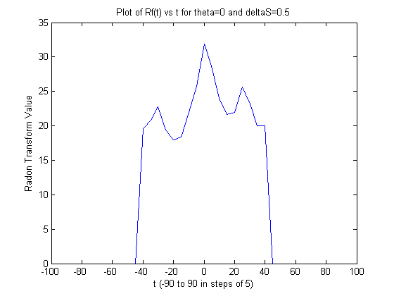
 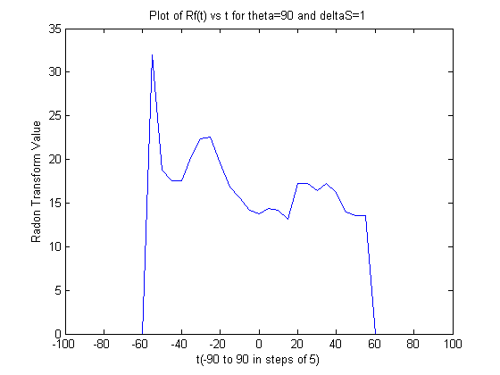 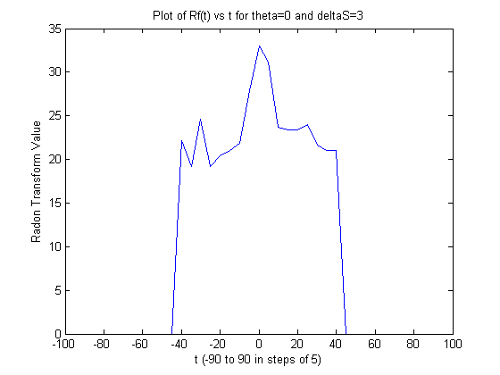 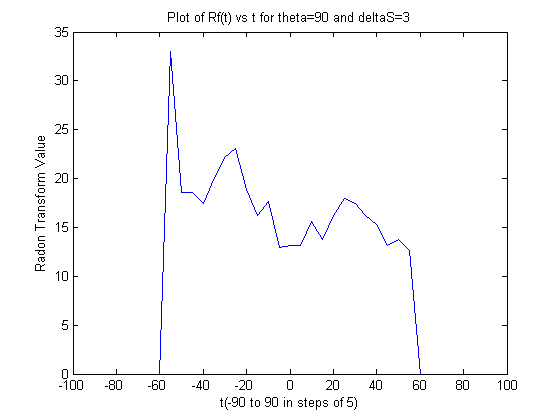
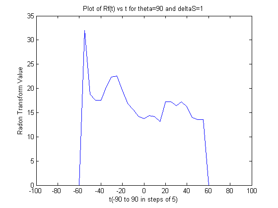 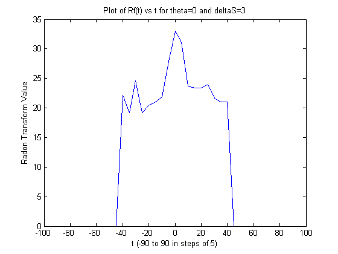 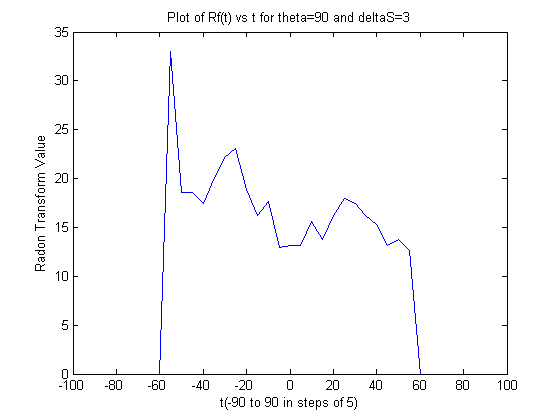 Observation:
Here, the plots with theta=90 are relatively smoother than theta=0 and are progressively getting sharper with deltaS. This is bcz the image has relatively shorter dark patches in X direction while it is fairly long in Y direction.
Part d
Observation:
The main tradeoff involved in choosing deltaT and deltaTheta is the larger resolution vs computation time. Lower steps are slower but smoother.
deltaS=0.5; R = myRadonTransformLowResolution(inputIm,deltaS);% computes Radon Transform of the % input Phantom Image figure imagesc(R); title('Radon Transform with deltaS=0.5 but large deltaT')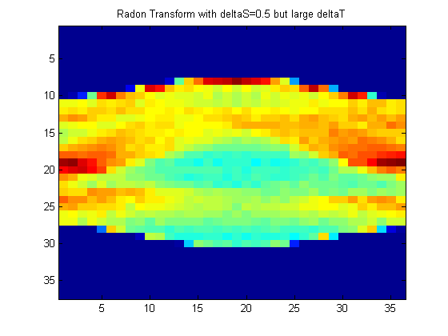
Part e
Observation:
ART is an iterative process. If deltaS is very low, we make worthless efforts but don't gain much information. On the other hand, if deltaS is large, we lose lot of information in successive iterations.